←Episodio 2: El pueblo (noche)→
En la escena, parece que alguna criatura está tomando control de tu cuerpo. Despiertas para darte cuenta de que estabas teniendo una pesadilla. Luego, te comunicas con Hunnigan; han pasado seis horas y ahora está oscuro y llueve afuera. Te encuentras en una casa en el extremo del lago. Explora la casa para encontrar una caja junto a la estufa, una Granada de Destello en un estante y Munición de Pistola en la mesa. Guarda en la máquina de escribir si quieres. Encontrarás una "Carta Anónima" en la cama. Parece ser de alguien que intenta ayudarte y te dice que vayas a la cascada para encontrar la llave de la iglesia. El escritor también sabe algo sobre lo que está ocurriendo en tu cuerpo, pero no puede hacer nada al respecto. Antes de continuar, vuelve al muelle. Hay lobinas cerca si quieres restaurar tu salud, incluso puedes arponearlas desde el bote si no tienes ganas de dispararles. Salta al bote y sigue las llamas azules que puedes ver a lo lejos. Marcan una cueva, así que entra en ella.
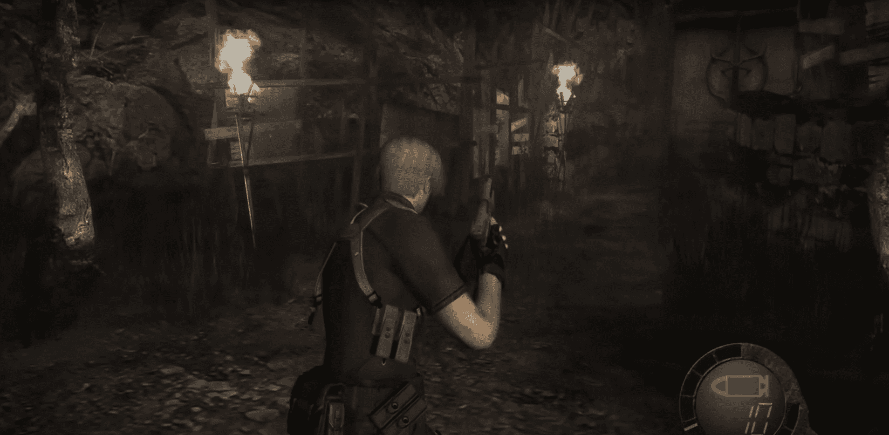Esta es una cueva que el Mercader ha tomado para su propio uso. Antes de empezar a comprar, coge los tres barriles a la derecha de su puesto, luego dispara algunas veces a la lámpara detrás de ellos para obtener un Espinelo. Ahora coge otro barril a la izquierda del puesto y empuja la caja allí para apartarla. Rompe los barriles detrás de ella para completar un camino hacia una escalera. Sube hasta el techo del puesto del Mercader y comienza a empujar las cajas aquí, al estilo Link, para encontrar aún más barriles. Uno de estos tiene la Gema Verde, que es un accesorio para la Máscara Elegante. Hay un agujero aquí por donde puedes caer detrás del mostrador del Mercader. Coge la Munición de Rifle aquí (a él no le importa) y luego vuelve. Dirígete de vuelta a la casa donde despertaste. Haz algunas compras en la parte delantera de la tienda si quieres, luego vuelve al bote para salir. Regresa al lugar donde despertaste; hay una gran antorcha ardiendo cerca del muelle. (Si vas a la derecha en lugar de eso, terminarás donde estabas antes de luchar contra Del Lago. De hecho, puedes obtener nuevos objetos aquí, pero también hay nuevos enemigos). Guarda en la casa si quieres, luego ve por la puerta a la izquierda.
Casi inmediatamente hay una escena donde un aldeano se acerca hacia ti como de costumbre cuando su cabeza explota y tentáculos retorcidos salen de su cuello. Algunos de los tentáculos tienen cuchillas afiladas y te lastimarán si te golpean, así que es mejor mantener distancia de ellos. El punto débil de la criatura en la base de los tentáculos; mátala y el aldeano también morirá. La debilidad principal de la criatura es la luz, así que una Granada de Destello la matará instantáneamente. Así que sigue disparando a la base de los tentáculos o lanza una Granada de Destello para matarla, luego recolecta tu recompensa que, en este caso, es una generosa suma de 5000 PTAS. A partir de ahora, algunos de los aldeanos no morirán cuando los mates, sino que brotarán estos tentáculos en su lugar. La creencia más común es que dispararle a un aldeano en la cabeza lo debilitará y hará más probable que los tentáculos salgan. Así que ahora deberías apuntar al cuerpo o las piernas en lugar de la cabeza.
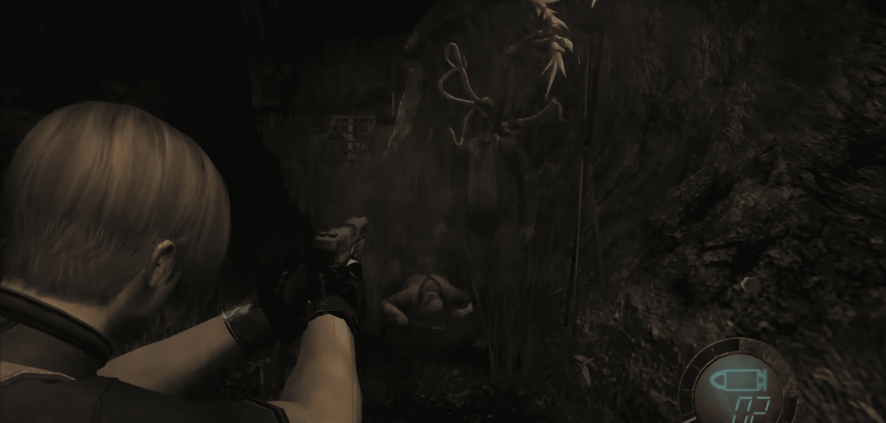Enfréntate a otro aldeano en el camino y continúa. Hay un lugar donde necesitas saltar sobre brechas en una presa para cruzar el río. Sigue la orilla para encontrar un barril, luego retrocede un poco y salta algunas piedras para cruzar el río nuevamente. Sigue este lado de la orilla hasta la cima de la cascada. Es posible que quieras mirar alrededor aquí para tener una idea de la disposición debajo. Ahora baja por la cuerda. Dispara al objeto brillante a la derecha de la cuerda para obtener un Espinelo. Hay un aldeano en una torre cercana, aunque debería ser fácil de derrotar. Sube tú mismo para encontrar Munición de Pistola y un barril.
Revisa la maquinaria hidráulica aquí, debes resolver un pequeño rompecabezas para cruzar el río. Primero, dispara a la cadena que sostiene la gran caja sobre el agua. La caja caerá y creará un paso para que puedas llegar a una pasarela en el centro del río. Explora un poco aquí, parece haber una cueva detrás de la cascada, pero el agua bloquea el paso. Dispara al objeto brillante en la viga frente a la cascada para obtener el Anillo de Ámbar. También hay un barril en la parte superior de una escalera a la izquierda. Debes hacer el truco de la caja dos veces más para llegar a la orilla opuesta. Una está cerca del agua y la otra está más arriba, así que sube por la escalera para obtenerla. Cruza hacia el otro lado del río y recoge el barril al final del camino. Luego sube por la escalera y opera la palanca allí. Esto desvía el flujo de la cascada.
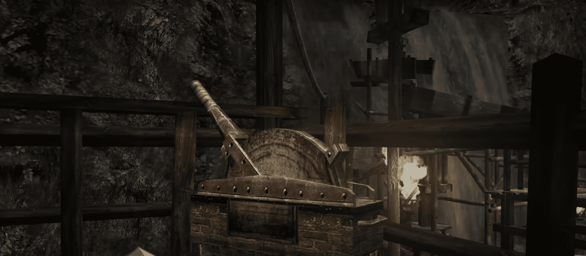Regresa, tan pronto como llegues al centro, una multitud de aldeanos sale de la cueva y algunos más vienen desde el otro lado del primer puente de cajas. Si tienes una granada de repuesto, lánzala al grupo principal y elimina a cualquier sobreviviente. Si las cosas comienzan a ponerse locas, siempre puedes usar los puentes de cajas a tu favor. Salta sobre ellos para frenar a los aldeanos. Una vez que hayas despejado el área, entra en la cueva y obtén la Insignia Redonda al final. No hay enemigos aquí de los que preocuparte. La puerta detrás de ella se abre y te comunicas con Hunnigan. Continúa hacia la puerta que lleva a la siguiente área.
Toma los dos barriles a la derecha, luego dispara la antorcha junto a la puerta para obtener un Espinelo. Ahora súbete al bote que te lleva automáticamente a otro muelle. Esta área debería parecer familiar ya que es la tienda del Mercader del último capítulo. Se acerca una batalla contra un jefe y necesitarás un poco de preparación. Primero, guarda tu partida ahora, ya que es posible que desees ajustar tus elecciones de compras para tu próximo intento. Si tienes pocas pociones de curación, compra Sprays de Primeros Auxilios si están disponibles. Si aún no lo has hecho, es posible que quieras obtener el TMP, ya que puede ser muy útil. Realiza cualquier mejora que hayas estado posponiendo, excepto en tu pistola, ya que no se usará mucho. Si tienes muy pocas municiones y objetos de curación, entonces, como se mencionó anteriormente, puedes comprar tu salida de la próxima batalla obteniendo el Lanzacohetes.
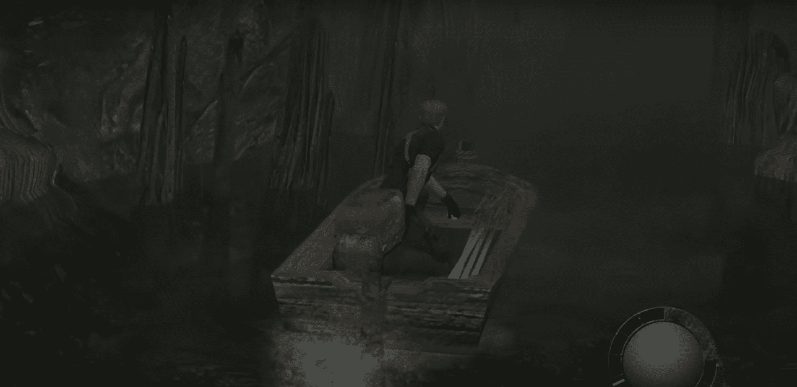Recuerda el rugido que escuchaste antes y del que no necesitabas preocuparte? Bueno, es hora de preocuparse. Sube las escaleras y recoge los barriles en la parte superior. (Estaban aquí en la Parte 1 pero han vuelto a aparecer para la Parte 2). Luego, atraviesa la puerta a la izquierda y se reproducirá una escena. Ambas puertas de salida se cierran y alrededor de una docena de aldeanos comienzan a arrastrar algo, aunque aparentemente no quiere venir. Es el acertadamente llamado El Gigante, un gigante que hace que Mendez parezca un muñeco, y cuando finalmente lo ves, está realmente, realmente enojado. Comienza matando a todos los aldeanos que lo arrastraron, luego dirige su atención hacia ti, pero logras esquivar su primer ataque.
Jefe: El Gigante El Gigante utiliza varios ataques diferentes, todos los cuales se pueden esquivar pero de diferentes maneras. No hay un orden establecido, así que simplemente tienes que observar lo que hace y actuar en consecuencia. Realiza diferentes movimientos de calentamiento dependiendo de lo que vaya a hacer a continuación, así que una vez que aprendas a reconocerlos, podrás esquivar los ataques bastante fácilmente. Si se acerca a ti, intentará patearte o golpearte con sus puños. No es muy rápido, así que la forma más fácil de evitar esto es correr más allá de él; también puedes correr entre sus piernas, lo que también ofrece un poco de alivio cómico. También intenta agarrarte con su mano. Si esto sucede, usa el control en la pantalla según se indica para liberarte; esto evitará que te maten cuando te estrelle contra el suelo. Pero ser agarrado causa un daño grave, así que es mejor evitarlo por completo; mantente en movimiento y mantente fuera de su alcance. Su ataque directo más serio es reunir fuerzas y cargarte, hace una especie de encogimiento de hombros antes de esto, así que puedes saber cuándo esperarlo. Presiona la combinación de botones en la pantalla cuando se indique para esquivar, o corre hacia un lado ya que no puede cambiar de dirección rápidamente. No contento con atacar con su enorme volumen, también arranca árboles del suelo y trata de golpearte con ellos. Esquiva esto alejándote lo suficiente o presionando la combinación de botones en la pantalla para agacharte. Finalmente, también levanta rocas para lanzarte. Esquiva estos simplemente saliendo del camino de la roca. Es importante mantener tu salud ya que, como hemos mencionado antes, no te mueves tan rápido cuando estás herido. Vas a poder moverte rápido para esquivar ataques y mantenerte fuera del alcance de El Gigante.
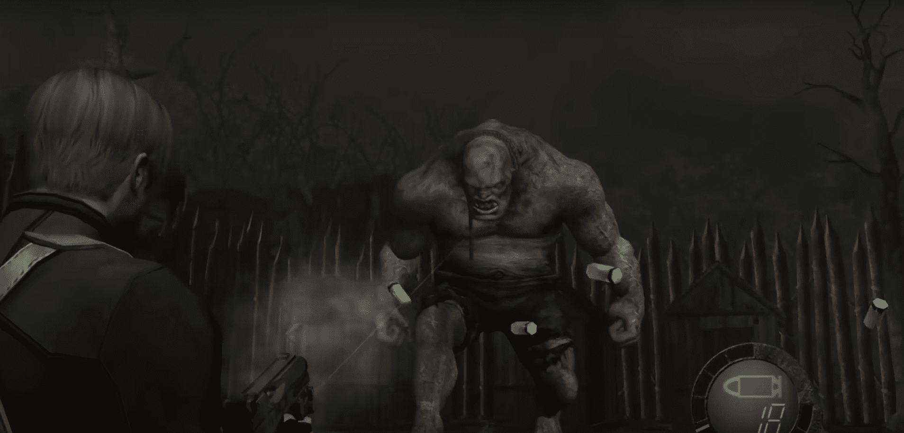Una vez que hayas infligido cierta cantidad de daño, se reproducirá una escena en la que El Gigante grita de dolor. Luego, el parásito La Plaga saldrá de su espalda, y ese parásito es lo que realmente necesitas matar. Acércate mientras está agachado y presiona el botón de acción para subir, luego sigue las indicaciones en pantalla para atacarlo. Asegúrate muy bien qué botón presionar o El Gigante te levantará y te estrellará contra el suelo más rápido de lo que puedas decir "¡Oops!" Tampoco te demores, porque si no terminas antes de que El Gigante se recupere, también terminarás como parte del pavimento. Después de recibir algo de daño, el parásito se retraerá y el ciclo comenzará de nuevo. Deberían ser necesarios tres buenos ataques para derribar al monstruo. Es posible infligir más daño disparando primero al parásito con un rápido disparo de escopeta y luego subiendo a bordo. Esto te permite hacer mucho más daño y puedes derribar al El Gigante en dos ciclos.
El monstruo deja caer 15000 PTAS, así que asegúrate de recogerlo. Luego, busca otros objetos que hayan quedado en la zona, estos pueden ser, dependiendo de lo que hayas perdido en El Gigante o ya hayas agarrado. Es una buena idea guardar de nuevo en la tienda del Mercader porque es posible que no tengas otra oportunidad por un tiempo. Antes de continuar hacia el cementerio, es posible que desees volver al pantano y al lado este del lago. Esto es completamente opcional, pero aunque los enemigos hayan vuelto a poblar estas áreas, también hay nuevos objetos que encontrar en ellas.
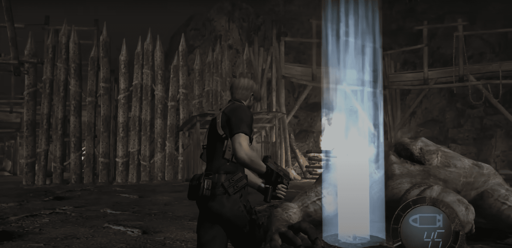Sigue el estrecho sendero y recoge dos cajas en la choza que encuentres en el camino. Cuando llegues al camino cerca de la iglesia, es posible que puedas divisar lobos infectados por el parásito. Dispara al que está en frente con un rifle de francotirador y utiliza la escopeta en los otros cuando se acerquen a ti. De lo contrario, el cementerio estará desierto. Utiliza la Insignia Redonda para desbloquear la iglesia y entra. Ten en cuenta que, una vez que hayas activado la escena dentro, el camino hacia el área de retención, el pantano y el lago estarán cerrados.
La iglesia parece desierta. Primero revisa la planta baja en busca de tesoros; hay 3000 PTAS en un armario cerca del altar y un barril en el pasillo derecho. Ahora, sube por la escalera en el pasillo izquierdo hasta el segundo piso. Sigue el borde para encontrar unas rejas que bloquean el paso. Retrocede un poco y notarás que puedes saltar al candelabro. Salta nuevamente hacia el extremo opuesto cuando el candelabro se acerque más al otro lado. Recoge los barriles al final del camino a la derecha. Ahora tienes que resolver un rompecabezas para levantar las barras del camino. Localiza la consola cerca del candelabro y úsala. Esto enciende tres focos con patrones de colores. La idea es girarlos de manera que, cuando se combinen, coincidan con el diseño en el centro. Esto no debería ser difícil, aunque podrías tener problemas si eres daltónico, pero la solución es: Gira R 2 veces. Gira G 3 veces. Gira B 1 vez. Elige Combinar. Las puertas se abren permitiéndote llegar a la puerta de la derecha. Entra para activar una escena.
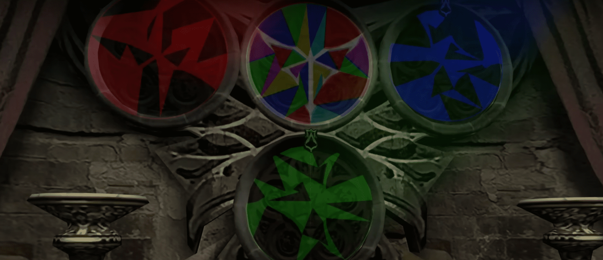Ashley está dentro, inicialmente nerviosa pero pronto se calma. Te comunicas con Hunnigan y ella promete enviar un helicóptero en tu dirección. También recibes el "Manual de Juego 3", que explica cómo jugar con un segundo personaje. Ashley se une a tu equipo. Ten en cuenta que Ashley es muy frágil, así que debes tener mucho cuidado cuando esté contigo. Si la dejas sola mientras hay enemigos en el área, intentarán llevársela. Si un enemigo logra agarrar a Ashley, entonces dispárales en las piernas, teniendo mucho cuidado de no golpear a Ashley en el proceso, y la soltarán. Si el enemigo se lleva a Ashley mientras la lleva, será un Game Over instantáneo. Además, si disparas accidentalmente a Ashley o si es atacada por un enemigo, casi seguramente causará un Game Over también. Es mejor mantenerla contigo a menos que puedas encontrar un lugar donde los enemigos no la encuentren. Entonces puedes dejarla, ocuparte de los enemigos por tu cuenta y luego regresar a buscarla. No podrás ir de un área a otra a menos que Ashley te esté siguiendo.
Recoge los seis barriles en la habitación y sal de nuevo al pasillo. Salta de vuelta al piso de abajo, pero no olvides atrapar a Ashley después de saltar, o se pondrá molesta. (Ni Leon ni Ashley pueden bajar por las escaleras de mano por alguna razón, pero mientras Leon puede saltar, Ashley necesita ser atrapada. Si apuntas tu arma o intentas usar tu cuchillo mientras Ashley espera ser atrapada, ella pensará que estás tratando de mirar por debajo de su falda, ¿no es así?) Una escena comienza cuando te acercas a la salida. La figura encapuchada del final del primer capítulo te detiene. Es Osmund Saddler, el líder de Los Illuminados. Revela que ha infectado a Ashley con un parásito, al que sarcásticamente llama un 'regalo', como parte de un plan para derribar al gobierno de los Estados Unidos. No está demasiado preocupado por contarte esto, ya que te ha dado el mismo 'regalo' y pronto ambos estarán bajo su control. Aparecen dos arqueros para capturarte, pero logras escapar saltando por una ventana.
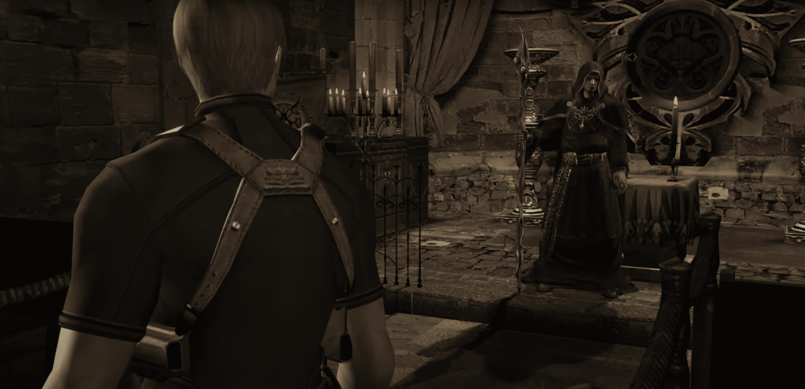Te encuentras en un patio lateral. Recoge los cuatro barriles aquí y luego desbloquea la puerta y sal. Hay una escena en la que una horda de aldeanos entra en el cementerio, evidentemente disgustados de que hayas completado tu misión. Ashley señalará un carro lleno de barriles, así que dispárale y estallará en llamas y rodará cuesta abajo, llevándose a la mayoría de los aldeanos. Encárgate de los aldeanos restantes. Hay dos cajas en la choza al este, y los nidos de pájaros han reaparecido sobre el camino de vuelta al pueblo, dejando caer un Spinel y munición de pistola.
Ahora, el Mercader vende una nueva pistola potente llamada Red9 y un accesorio para ella. Ocupa dos cuadros más que la que tienes ahora, pero la potencia adicional puede valer la pena. El accesorio para la pistola ocupa tres cuadros. Toma la caja a mitad del túnel y sube la escalera al final. Asegúrate de que Ashley esté fuera del camino, luego dispara a la lámpara sobre la trampilla para obtener un Spinel. Hay un barril aquí y una caja en la siguiente habitación. Probablemente sea una buena idea guardar mientras estás aquí.
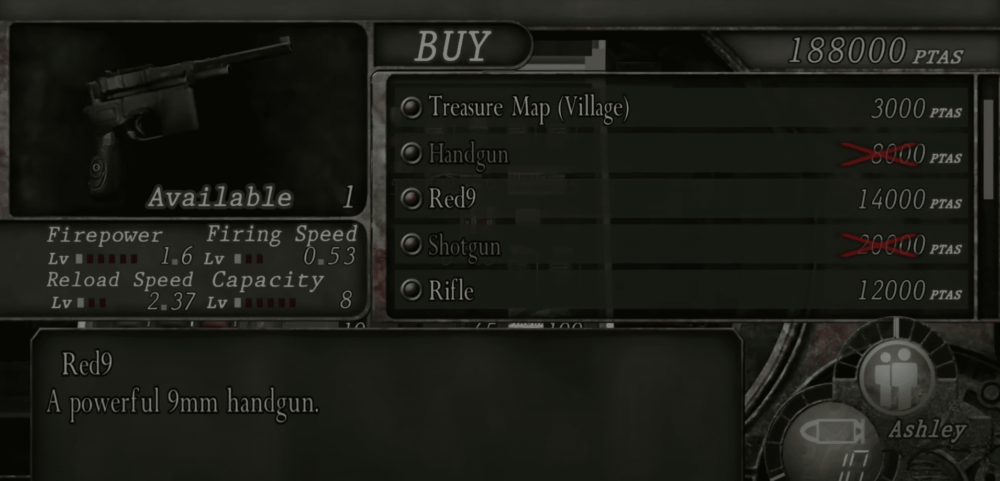Lleva inmediatamente a Ashley hacia la derecha y entra en la torre, luego sube por la escalera. Toma el Spinel mientras estás aquí y deja a Ashley estacionada por el momento; parece que los aldeanos no podrán encontrarla aquí. Ahora baja y comienza a buscar a los aldeanos. Hay menos enemigos esta vez, pero ahora tienen la posibilidad de desarrollar parásitos. No es necesario que derrotes a todos, pero ayudará si estás buscando objetos. Probablemente puedas encontrar a algunos aldeanos cerca de la base de la torre; afortunadamente, no parecen estar lo suficientemente organizados como para atacar todos a la vez. La mayoría de los aldeanos estarán en el norte y este, aunque habrá uno en el granero. Usa el alcance del rifle para intentar localizarlos antes de que te vean a ti. El camino hacia la granja está lleno de trampas para osos, así que asegúrate de buscar cuidadosamente y desactivarlas. Ten en cuenta que Ashley también puede quedar atrapada por ellas y sufrirán mucho daño si lo hace, así que es mejor ser cauteloso y desactivar tantas como puedas encontrar. Ten en cuenta que las puertas al área donde empezaste el juego y a la casa del jefe han sido cerradas permanentemente.
Ve hacia el contenedor rojo que se asemeja a un contenedor de basura a la derecha y ordena a Ashley que se esconda allí; el botón para hacer esto se mostrará en la pantalla. Hay más contenedores como este en el juego y son lugares convenientes y seguros para dejar a Ashley mientras luchas contra los enemigos. Ahora ve a la choza a la izquierda para recoger un barril y recoge "Sera and the 3rd Party". Esto parece estar escrito por Saddler y aparentemente está más preocupado por encontrar a Luis que por recapturarte a ti y a Ashley. También puedes guardar aquí. Hay enemigos en esta área al igual que en el pueblo, derrotarlos más o menos de la misma manera. Sin embargo, están más cerca entre sí que en el pueblo, por lo que será más difícil derrotarlos uno por uno. Asegúrate de revisar el borde junto al granero para encontrar aldeanos que te arrojen cosas. Cuando los aldeanos hayan desaparecido, desactiva las trampas para osos en el granero y comienza a buscar objetos.
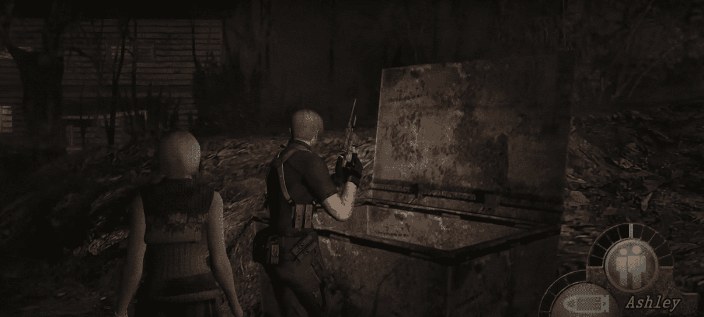Toma nota de que la puerta al área donde conociste a Luis está permanentemente tapiada. Ve al borde junto al granero y baja al área cercada al norte. Desactiva las trampas para osos que conducen a la puerta; estas no dejan dudas sobre qué camino seguir a continuación. Toma la caja de la mesa y un barril y otra caja en la choza. Probablemente sea una buena idea guardar ahora, ya que la próxima área será difícil. Recoge a Ashley, luego acércate a la puerta y usa el comando de Piggyback para iniciar una breve escena donde Ashley se sube a tus hombros, luego sobre la cerca y desenbarrica la puerta desde el otro lado. Luego pasas por ella.
Esta es un área nueva; sigue el pasaje para encontrarte con el Mercader. Realiza cualquier mejora que hayas estado posponiendo por falta de fondos, pero recuerda mantener la Beerstein y la Elegant Mask, incluyendo sus accesorios, ya que todavía no son conjuntos completos. Cruza el puente; este pasa directamente sobre el camino donde tuviste que escapar de una roca rodante por primera vez. Hay una escena donde Hunnigan te informa que el helicóptero que organizó fue derribado. Ella va a organizar otro, así que necesitas llegar al punto de extracción mientras tanto. Continúa hasta el otro lado del puente para ver una segunda escena. Hordas de aldeanos se acercan desde múltiples direcciones y el único lugar para refugiarse es una cabaña grande en medio de un campo. Entras y encuentras a Luis, quien te da algo para asegurar la puerta. Luis y Ashley se presentan, aunque Ashley no es fan de los comentarios sugestivos de Luis. Luego, Ashley ve a los aldeanos acercándose a la cabaña y le dices que se esconda arriba mientras tú y Luis intentan repeler a los aldeanos.
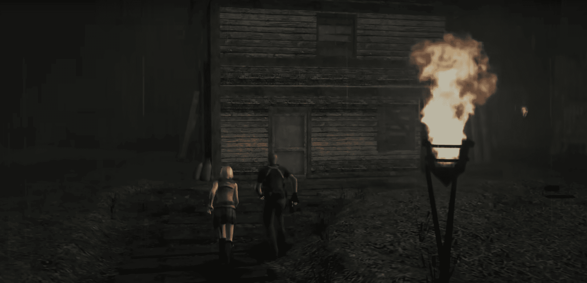Ahora viene una batalla difícil. No solo eso, sino que le sigue otras dos, posiblemente tres batallas más difíciles. Así que no es suficiente con solo ganar esto; necesitas salir con suficientes recursos para tener una oportunidad de vencer las próximas peleas también. La estructura y el nivel de intensidad son similares a la primera batalla en la aldea. Necesitas conseguir suficientes bajas para activar una escena cinemática, luego, después de un cierto período de tiempo o suficientes bajas adicionales, la batalla termina abruptamente. Luis estará luchando a tu lado con su propio Red9. No te preocupes por dispararle accidentalmente, ya que es muy bueno esquivando cuando apuntas tu arma hacia él. De hecho, no te preocupes por protegerlo en absoluto, ya que es perfectamente capaz de cuidarse solo.
La mejor arma para usar aquí probablemente sea la escopeta, ya que puede derrotar, o al menos retrasar, a varios enemigos a la vez. El TMP será útil contra múltiples enemigos, pero probablemente no podrá manejar más de dos a la vez durante mucho tiempo. Cambia a una pistola si los aldeanos comienzan a disminuir. Usa una Granada Incendiaria o de Mano si comienzas a sentirte abrumado. Una Granada Aturdidora matará instantáneamente a un parásito si aparece, pero probablemente no deberías desperdiciarla si solo hay un parásito visible. En algún momento, Luis dirá que es hora de subir las escaleras y se dirigirá hacia arriba. Síguelo, y si un grupo de aldeanos está detrás de ti, entonces lanza una granada contra ellos. Mientras tanto, el grupo principal ha encontrado algunas escaleras y tratará de usarlas para entrar por las ventanas de arriba. Ahora alterna entre derribar las escaleras, defender a los aldeanos en las escaleras y eliminar a cualquier enemigo que haya encontrado su camino adentro. No te molestes en verificar las ventanas que aún no se han roto. Si los aldeanos comienzan a tomar el control de la habitación, retrocede a una esquina segura hasta que puedas restaurar el orden.
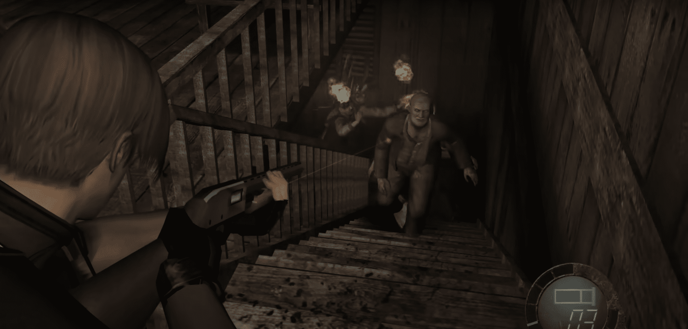La batalla termina tan misteriosamente como la de la aldea; uno de los aldeanos dice "Vámonos", y el resto simplemente se va. (Si el contenido de "Sera y el Tercero" es creíble, entonces quizás lo que sucedió es que los aldeanos estaban realmente tras de Luis, pero cuando Saddler se dio cuenta de que estabas con él, los llamó para proteger a Ashley, ya que todavía quiere usarla en su plan contra los EE. UU.) Luis se despide rápidamente y se va, terminando el capítulo. Inmediatamente después de la batalla, vuelve arriba y recoge los objetos que dejaron los enemigos antes de que desaparezcan. Es posible que incluso encuentres algún objeto afuera de la cabaña.
El Mercader se ha trasladado a un lugar al sur de la cabaña y hay una máquina de escribir a su izquierda si quieres guardar la partida. El Mercader ahora tiene el Punisher a su precio habitual en caso de que no lo hayas obtenido como premio. Recoge "Dos Rutas" junto a la máquina de escribir; presenta un pequeño dilema para ti. Hay dos formas de proceder desde aquí. Una ruta, que resulta ser la Ruta Izquierda o norteña, está custodiada por un gran número de aldeanos (llamados Ganados en la nota). La otra ruta, que es la Ruta Derecha o sureña, está custodiada por El Gigante. (Este no es el mismo El Gigante al que te enfrentaste anteriormente, sino uno muy similar. Entonces quizás sea más correcto decir Un Gigante, aunque no suene tan aterrador). Si tomas el camino de la Derecha, puedes correr más allá de El Gigante si eres rápido, pero no obtendrás la recompensa por derrotarlo de esta manera. Haz tu elección y luego encuentra la palanca cerca del Mercader y muévela en esa dirección. Si lo deseas, puedes explorar ambas direcciones. De hecho, necesitarás explorar ambas si quieres obtener todos los tesoros disponibles. Si deseas intentar ambas, puede que quieras posponer la segunda hasta después de enfrentar al jefe final de esta área. Atraviesa la puerta que haya abierto la palanca.
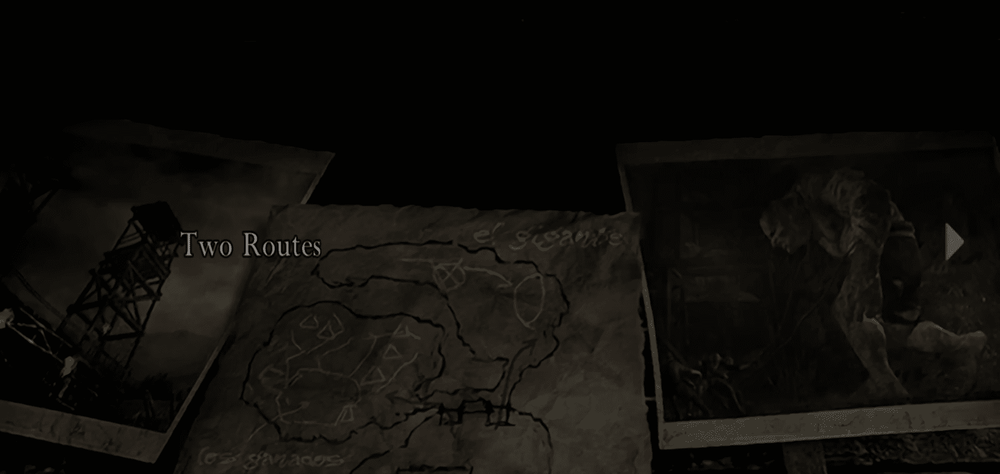Si eliges el camino de la izquierda deberás enfrentarte a un gran número de aldeanos. Al entrar, dile a Ashley que espere mientras te ocupas de la primera oleada de enemigos. Puedes disparar al carro que tienes enfrente para hacerlo explotar y eliminar algunos de los enemigos, lo que facilitará un poco las cosas para ti. Estaciona a Ashley en el contenedor a la derecha cuando tengas la oportunidad. Sigue el pasaje mientras gira hacia la derecha y recoge el barril al final. Hay una escalera en la pared junto a esto; sube y derrota a los aldeanos que patrullan en la parte superior. Recuerda este lugar para más tarde, ya que es un buen lugar para hacer frente a múltiples enemigos. El camino continúa y se divide para formar un recinto. Puedes eliminar a algunos de los enemigos aquí desde la distancia con un rifle, pero si varios comienzan a acercarse a la vez, retrocede para defenderte. Hay otro barril aquí y otro contenedor si quieres mover a Ashley un poco más cerca. No saltes al recinto, pero es seguro saltar a un área pequeña a la derecha. Recoge dos barriles y cartuchos de escopeta de esta área lateral.
Al caer en el recinto, se desencadena un poco de emoción, así que querrás planificar un poco antes. Ve al lado lejano (este) del recinto y derriba la escalera allí, pero deja la escalera del lado cercano en pie y ten en cuenta dónde está. Salta cerca de donde empujaste la escalera y observa la escena donde salen las hermanas Rosa, versiones femeninas del Dr. Salvador, para atraparte. Cruza rápidamente hacia la escalera que dejaste en pie y sube a la pared, corriendo hacia la izquierda pasando junto a los otros aldeanos que han aparecido allí. Haz una parada al inicio del camino, pero retrocede hacia la entrada si es necesario. Las hermanas Rosa son difíciles de matar, así que no intentes enfrentarlas con una pistola; usa la escopeta si tienes suficiente munición. Recoge un Rubí de una de las hermanas, y la Llave del Campo, que necesitarás para continuar, de la otra. Vuelve a caer en el área cercada para recoger dos barriles y usa la llave para abrir la puerta hacia la otra mitad del campamento.
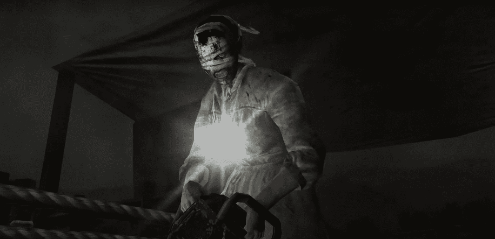Continúa avanzando con cuidado sin ir demasiado lejos, ya que hay más sorpresas esperando. Toma la caja que está junto a unas sacos de arena y ve por la puerta a la derecha de ésta. Recoge el barril en esta habitación. Ahora cae por la trampilla al sótano, agarra la Granada de Mano y el barril, luego sube de nuevo. Observa también una ventana tapiada aquí; ábrela y salta al pasaje siguiente. Toma dos barriles al final, uno de los cuales contendrá el Rubí, un accesorio para la Máscara Elegante. Regresa al camino principal y continúa. Cuando pases por una cerca de alambre de púas, los enemigos empezarán a salir de un túnel a la izquierda. Dispara tu escopeta una o dos veces para agruparlos en la entrada, luego lanza una granada de mano para eliminar a tantos como puedas. Después, usa tu escopeta o TMP para derrotar a los que queden. Si el flujo es demasiado intenso, utiliza la cerca de alambre de púas, luego las otras fortificaciones, luego la puerta que acabas de abrir, y así sucesivamente, como puntos de estrangulamiento. Cuando los enemigos hayan desaparecido, llama a Ashley y regresa a través de la cerca de alambre de púas; hay otro contenedor para Ashley pero no debería ser necesario. Toma el barril a la derecha, luego entra en un área pequeña a la izquierda por donde salieron los aldeanos. Toma dos barriles más aquí y pasa por la puerta roja para salir del área.
Ahora te encuentras en una zona segura, la lluvia ha cesado pero aún es de noche. El Mercader está al final de un camino que viene del sur (la salida de la ruta derecha). Toma el barril que está junto a él. Al sureste hay un edificio pequeño. Obtén munición de pistola de las papeleras del lado derecho, luego entra, toma munición de rifle del armario y recoge "La Última Defensa del Pueblo". Es de Mendez y dice que planea emboscarte, pero tendrás que derrotarlo antes de poder avanzar. Hay una máquina de escribir aquí si quieres guardar, probablemente sea una buena idea si no lo has hecho desde la cabaña. Comienza a dirigirte hacia el norte y examina las grandes puertas verdes a medida que pasas; se opera con un escáner ocular. Sube por la pendiente hasta el sistema de teleférico y toma el barril en la esquina derecha. Antes de subir a uno de los teleféricos, revisa la cara del acantilado a la izquierda en busca de aldeanos y elimínalos con tu rifle; el alcance es útil aquí. Cuando te subas a uno de los teleféricos, habrá más aldeanos viajando en la dirección opuesta listos para lanzarte cosas. Usa tu rifle para acabar con ellos primero, pero cambia a la pistola o TMP si empiezan a acercarse demasiado.
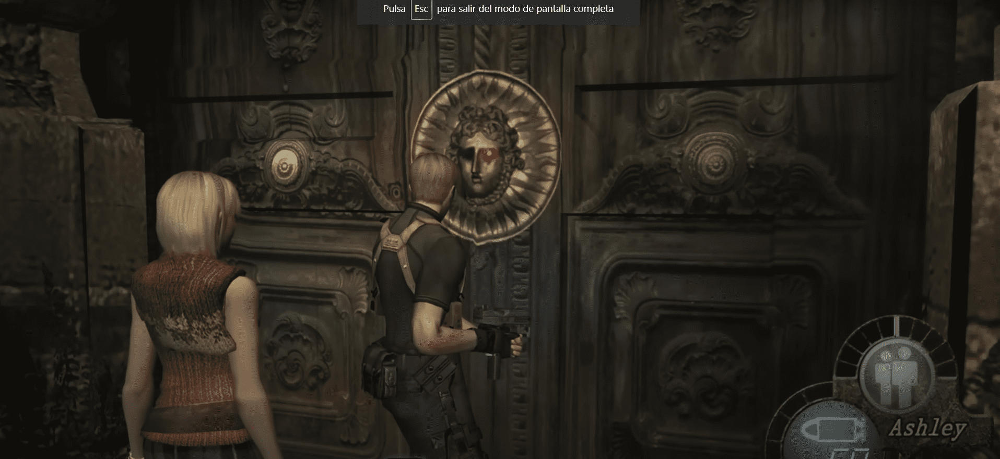Cuando desembarques, toma munición de pistola y una granada cegadora de los armarios en la sala de control. Baja por la primera escalera hasta un puente que lleva a unas cuevas. Puedes evitar esto si quieres, pero hay un tesoro allí. Si decides ir por él, entonces deja a Ashley en el puente y comienza a luchar contra los aldeanos adentro. Hay dos justo dentro, alrededor de una esquina, y uno de ellos tiene dinamita. No tienes muchas oportunidades de apuntar, así que es posible que quieras usar la TMP o la escopeta para hacer explotar la bomba antes de que pueda ser lanzada. Sube la escalera para encontrar a otro aldeano, luego abre el cofre en la parte trasera para obtener el Ojo de Gato Amarillo, la gema final para el Beerstein. Regresa al puente, recoge a Ashley y continúa hasta el fondo de las escaleras. Sigue el camino para encontrar nuevamente al Mercader. Hay cartuchos de escopeta junto con munición de pistola y TMP junto a él. Usa la máquina de escribir para guardar, ya que viene otra batalla difícil. Continúa a través de la siguiente puerta.
Sigue el camino hasta llegar a un edificio y comienza una escena. Le dices a Ashley que se esconda mientras investigas lo que hay dentro. Aunque eres bastante cuidadoso al avanzar, Mendez aún te toma por sorpresa y no está de humor para perdonar. Te levanta, te lanza al otro lado de la habitación y ata los mangos de metal de la puerta en un nudo para que quedes atrapado adentro. Ahora debes presionar la combinación de botones que se muestra en la pantalla como cuando escapaste de las rocas y si lo haces correctamente, esquivas su próximo ataque. Ves un barril de gasolina y lo derribas para que el contenido se derrame en el suelo a su alrededor. Luego disparas, encendiendo el líquido y haciendo que el barril explote. El abrigo que Mendez lleva puesto se quema para que puedas ver su cuerpo, y no es una vista bonita. Extremidades adicionales crecen desde su espalda y su torso se estira de manera que solo su columna vertebral conecta sus piernas y su pecho. Pero al menos el daño que ha sufrido por la explosión te da una oportunidad de luchar para derrotarlo.
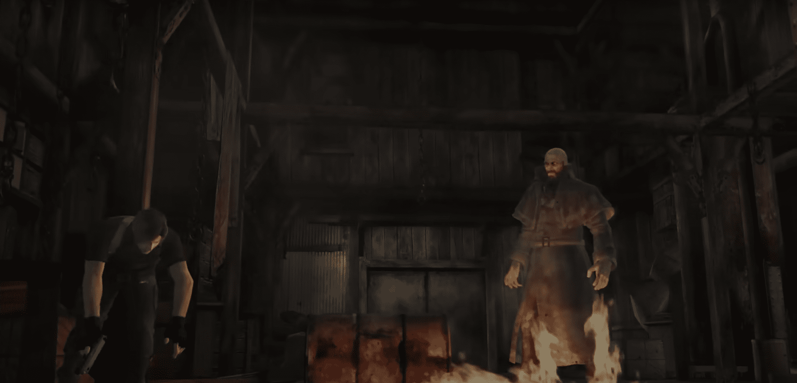Hay dos partes en esta batalla; primero debes separar las piernas de Mendez del resto de su cuerpo y luego debes luchar contra su mitad superior. Puede golpear muy fuerte, quitando alrededor de cuatro unidades de tu salud. En su primera forma se mueve lentamente, por lo que generalmente puedes esquivar sus ataques. Las granadas incendiarias le hacen mucho daño ahora, así que úsalas si las tienes, pero si no las tienes, aún así no es tan malo. Hay una escalera en la parte trasera del edificio y puedes usarla para llegar a una repisa superior. Así que puedes pelear allí arriba o quedarte en el suelo. Si estás luchando en la repisa, Mendez aún puede alcanzarte con sus nuevas extremidades. Escucha un sonido de estiramiento que te indica que está a punto de atacar, y muévete lo más rápido posible a otra sección de la repisa cuando lo escuches. Mientras Mendez está ocupado arañando el lugar donde estabas, gira y dispara hacia él. Su punto débil es su columna vertebral, así que apunta allí. Usa la TMP si tienes munición, pero la pistola funcionará igual de bien si eres bueno esquivando los ataques. Alternativamente, quédate en el suelo para luchar. Sigue apuntando a su columna vertebral, pero observa cuándo está aturdido por el daño, ya que esto te da una buena oportunidad para correr más allá de él hasta el otro extremo del edificio. Incluso si no está aturdido, corre más allá de él cuando se acerque demasiado y hay una buena posibilidad de que no pueda reaccionar a tiempo para alcanzarte. El movimiento de giro rápido que dominaste en la pelea con El Gigante será de gran ayuda aquí. Aunque estás disparando desde más lejos cuando estás en el suelo, obtienes un mejor ángulo y es posible que incluso puedas hacer algunos disparos de rifle.
Cuando la columna vertebral de Mendez alcanza su límite, si se rompe y deja las piernas atrás. Podrías pensar que esto lo ralentizaría, pero simplemente usa sus nuevas extremidades para balancearse desde las vigas y se mueve sin problemas. Nuevamente, puedes subir a la repisa o quedarte en el suelo. Si luchas en la repisa, lo importante es mantenerse en movimiento. Hay un lugar en un lado que tiene protección parcial debido a una pared, pero no lo uses demasiado porque Mendez eventualmente te encontrará allí. Usa la escopeta o la TMP cuando estés a una buena distancia; usa una pistola si tienes problemas de munición. Si luchas en el suelo, tienes más espacio para esquivar ataques y es mejor disparar desde la distancia si puedes. Si puedes hacer que Mendez caiga de las vigas, entonces una granada de mano bien colocada le hará maravillas. Es posible que recibas indicaciones en pantalla para esquivar ataques, y si te agarra, sigue las instrucciones en la pantalla para escapar como con El Gigante. Cuando Mendez es derrotado, puedes reclamar tu recompensa. Deja caer 30000 PTAS y el objeto clave Ojo Falso. Busca en el edificio los objetos que no recogiste durante la batalla.
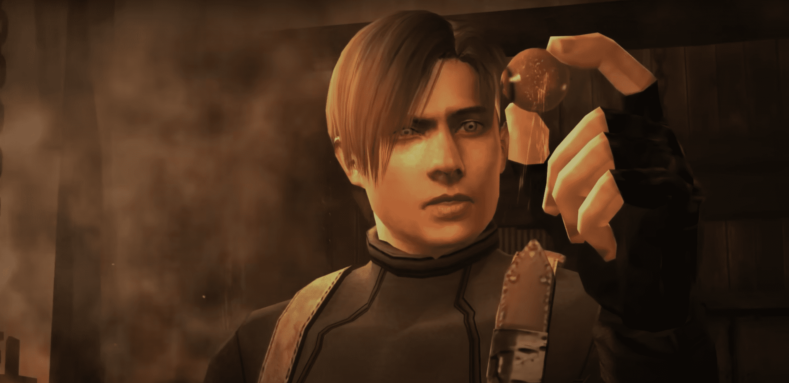Cuando hayas terminado, salta por el hueco en la pared para reunirte con Ashley. Luego, regresa a la puerta y sal. Es posible que quieras guardar en el Mercader. Ve hacia el teleférico y úsalo para regresar. Estamos en la recta final de la isla ahora, así que si hay algo que quieras recoger, como tesoros o artículos que no cabrían en tu maletín, hazlo ahora. De lo contrario, usa el Ojo Falso para desbloquear la puerta con el escáner ocular y atraviesa.
Toma la munición para la pistola y observa a un grupo de aldeanos esperándote en el camino. Comienza a avanzar hacia ellos para iniciar una escena en la que un camión arranca y se dirige hacia ti, atropellando a los aldeanos a su paso. Debes disparar al conductor para hacer que se estrelle si quieres evitar el mismo destino. Usa el rifle para esto, a menos que tengas poca munición, en cuyo caso una pistola también funcionará. También puedes lanzar una granada cegadora si tienes una de sobra. Retrocede cuando el camión se estrelle para que no te alcance. El camión deja caer 5500 PTAS pero los aldeanos salen de él mientras pasas. Una granada de mano los eliminará a la mayoría si puedes permitírtelo, o simplemente sigue corriendo. Continúa por el camino y recoge los barriles en el mirador. Continúa para una escena en la que todos los aldeanos que quedaron salen por la puerta y comienzan a correr hacia ti. Te diriges hacia el puente frente a ti, lo cruzas y lo levantas antes de que puedan alcanzarte. Esto termina el capítulo y la Parte 2.
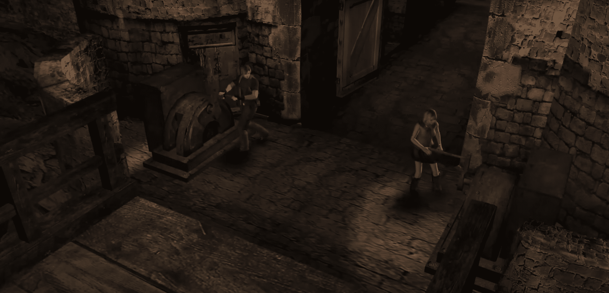Capitulo 1: Pueblo (día) Volver arriba Capítulo 3: Castillo (interior) Capitulo 4: Castillo (terrenos) Capítulo 5: Isla